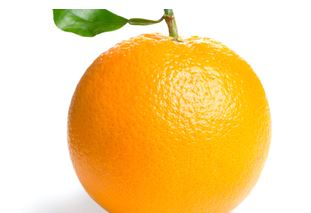
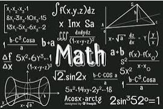

The orange is the fruit of various citrus species in the family Rutaceae; it primarily
refers to Citrus × sinensis, which is also called sweet orange, to distinguish it from the related Citrus ×
aurantium, referred to as bitter orange
More About Oranges

The giant panda, also known as the panda bear, is a bear native to South Central China. It
is characterised by its bold black-and-white coat and rotund body. The name "giant panda" is sometimes used
to distinguish it from the red panda, a neighboring musteloid
More About Giant Pandas

Mathematics includes the study of such topics as quantity, structure, space, and change. It
has no generally accepted definition. Mathematicians seek and use patterns to formulate new conjectures;
they resolve the truth or falsity of such by mathematical proof.
More About Mathematics